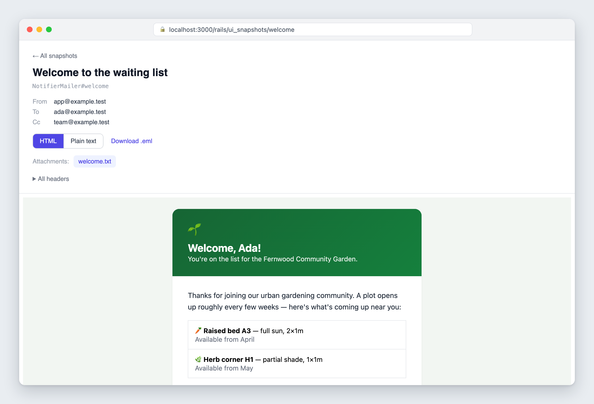
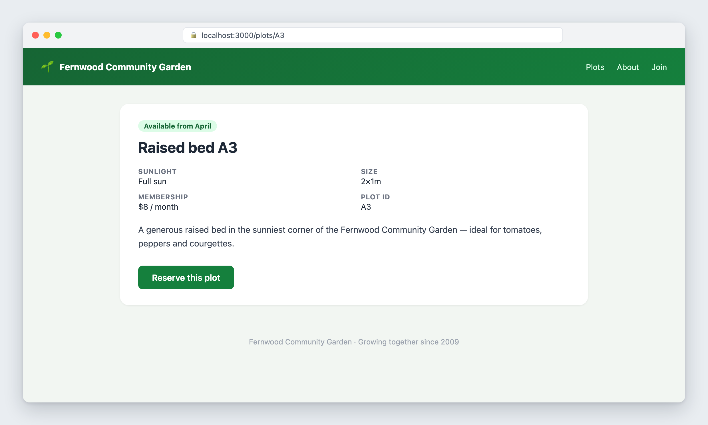
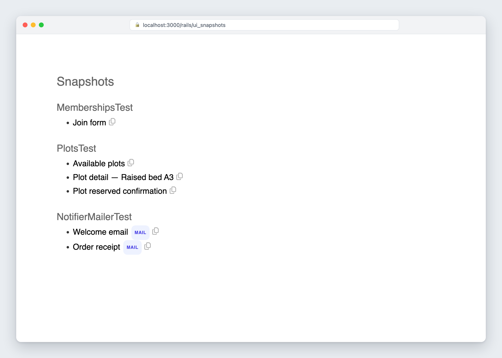

Snapshot UI
View what your Rails tests produced.
Open emails and integration-test responses in your browser while writing and debugging tests.
Gemfile
gem "snapshot_ui-rails"
Mailer tests
The test email is the preview.
Pass the email created by a mailer test to take_snapshot. Snapshot UI displays that exact message instead of requiring a separate Action Mailer preview.
test/mailers/notifier_mailer_test.rb
class NotifierMailerTest < ActionMailer::TestCase
test "welcome email" do
email = NotifierMailer.welcome(user)
take_snapshot(email)
assert_equal [user.email], email.to
end
end
.eml are available from the same snapshot.Integration tests
Render the response you already have.
Pass an integration-test response to take_snapshot and inspect its body in the browser. There is no need to print the HTML or recreate the test state by hand.
test/integration/plots_test.rb
class PlotsTest < ActionDispatch::IntegrationTest
test "shows a plot" do
get "/plots/A3"
take_snapshot(response)
assert_response :success
end
end
Run and review
Snapshots are opt-in.
Normal test runs do not write snapshots. Add the flag when you want to inspect them:
bin/rails test test/integration --take-snapshotsMount the interface in development and open /rails/ui_snapshots. The index refreshes as tests publish snapshots.
